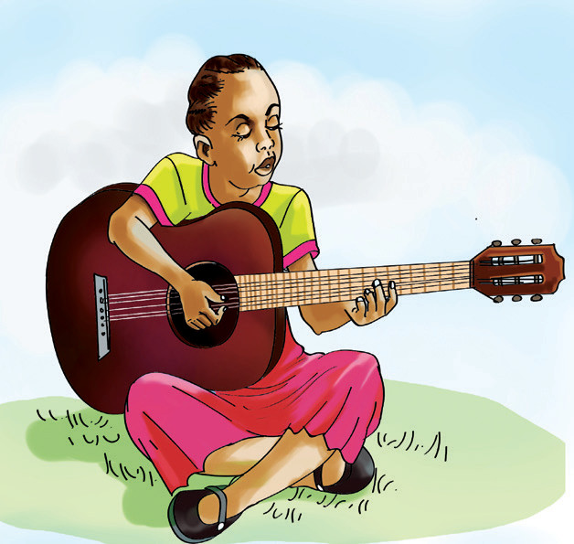
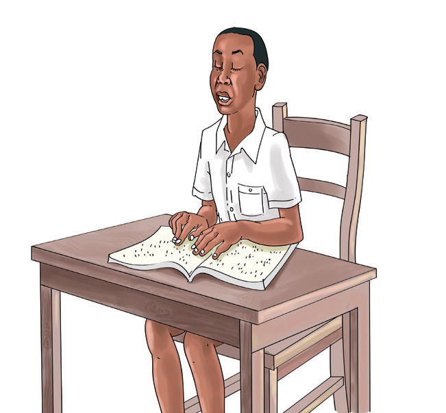

(c) Read aloud/sign each of the following questions and answer them.
1. What were you doing before you went to the class?
2. What were you eating at lunchtime yesterday?
3. What were you doing at 9.00 p.m. last night?
4. What sports were you playing 2 years ago?
5. Where were you going the first time you saw a dog?
6. Where were you when it started raining?
7. What were you doing when the teacher entered the classroom?
8. Who were you talking to the last time you spoke Kiswahili?
(a) Study the following questions and their answers. Then, say/sign what you have observed in the answers.
1. Were Juma and Sadick swimming yesterday?
Yes, Juma and Sadick were swimming yesterday.
2. Was the baby crying ten minutes ago?
No, the baby was not crying ten minutes ago.